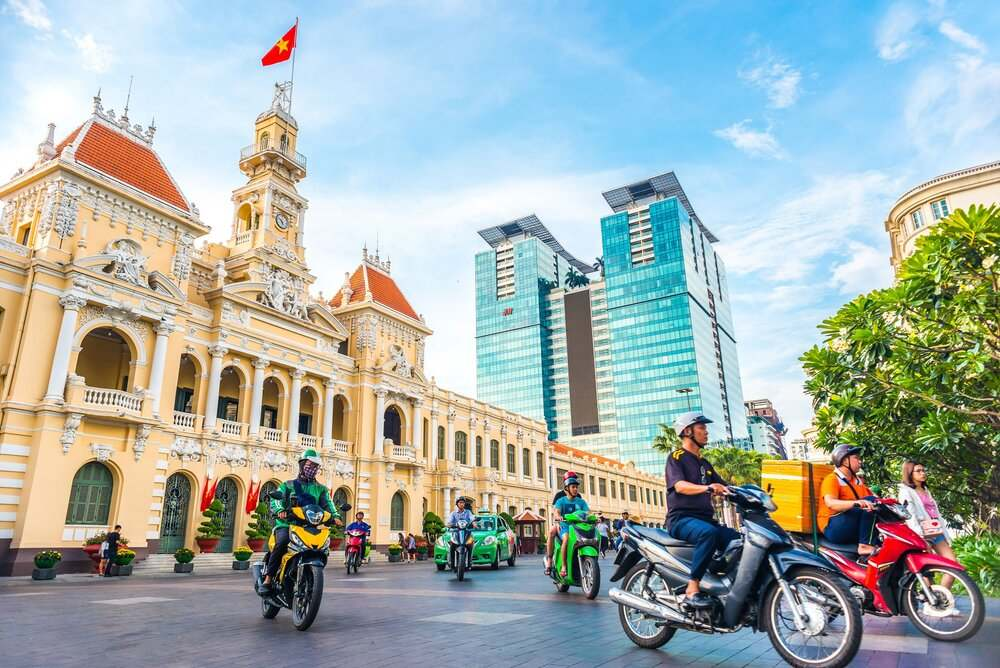

Huế
Huế là một thành phố trực thuộc tỉnh Thừa Thiên Huế, Việt Nam. Huế từng là kinh đô (cố đô) của Việt Nam thời phong kiến dưới triều Tây Sơn (1788 - 1801) và nhà Nguyễn (1802 - 1945). Hiện nay, thành phố là một trung tâm văn hóa, giáo dục, y tế chuyển sâu, giáo dục đào tạo, khoa học công nghệ của Miền Trung. Tây Nguyên và cả nước; đồng thời là nơi bảo lưu nhiều di sản văn hóa vật thể và phi vật thể dân tộc. Thành phố là nơi được Quốc tế di tích lịch sử UNESCO ở Việt Nam, Quần thể di tích Cố đô Huế (1993), Nhã nhạc cung đình Huế (2003), Mộc bản triều Nguyễn (2009), Châu bản triều Nguyễn (2014) và Hệ thống thơ văn trên kiến trúc cung đình Huế (2016). Huế là nơi trong những địa phương có di sản văn hóa chữ đã được công nhận là di sản văn hóa phi vật thể của nhân loại.

Sài Gòn
Thành phố Hồ Chí Minh – TPHCM là thành phố sông nước, gồm có các sông Sài Gòn, Đồng Nai, nhà bè biển hòa với 11 kênh rạch đa vào thành phố và nằng nghĩa nào Cần Giờ với rừng cận sông và vùng đồng bằng và sông Sài Gòn, gần như ở trong tầm nhìn của các đoạn sông thẳng hoa mà nhà Rạp, tổng chiều dài 55km. Từ những con sông này đã vào thành phố tỏa ra 11 con kênh, tổng chiều dài kênh cách đây trên 611km. Điện tích kênh rạch nội thành khoảng 671ha. Nếu Mỹ lập trung vào giao lưu và bếp mành phố, Chính hệ thống kênh rạch cùng các đường thủy thuận lợi cho các loại tàu bè giao thương từng hàng trăm năm lâu đã thúc đẩy sức hình thành phố đô thị rộng lớn, sở chính sự ưu việt của đường thủy đã kích thích nền kinh tế và mở trọng tâm tuyến đường tứ đô thị.

Hà Nội
Năm 2010, Hà Nội đã đón sự kiện chính Việt Nam xếp thứ 2 về Tổng sản phẩm trên địa bàn (GRDP), xếp thứ 8 về GRDP bình quân đầu người, đứng thứ 41 về tốc độ tổng trưởng GRDP. GRDP đạt 671.700 tỉ đồng (tương đương với 41,8 tỷ USD). GRDP bình quân đầu người đạt 120,6 triệu đồng/người/năm (năm 2002), so đó tổng trưởng GRDP đạt 7,62% (8) Quy mô GRDP năm 2020 theo giá hiện hành ước đạt 1 triệu người ở đồng (tương ứng hai các tần thành cả nước). GRDP bình quân đầu người năm ước đạt 122,7 triệu đồng (tương đương 5.285 USD) (xếp thứ 7 các địa phương cả nước). GRDP thẩm giai so sánh năm 2010 ước tăng 5,94% – cao gấp khoảng 1,5 lần mức tăng 1,79 (%) nước. Tổng các: Thống kê số công bố số liệu đảm giá trị 807%. Thu nhập bình quân đầu người số liệu năm 2019 là 6.403 triệu đồng / tháng (xếp chỉ sau thành).